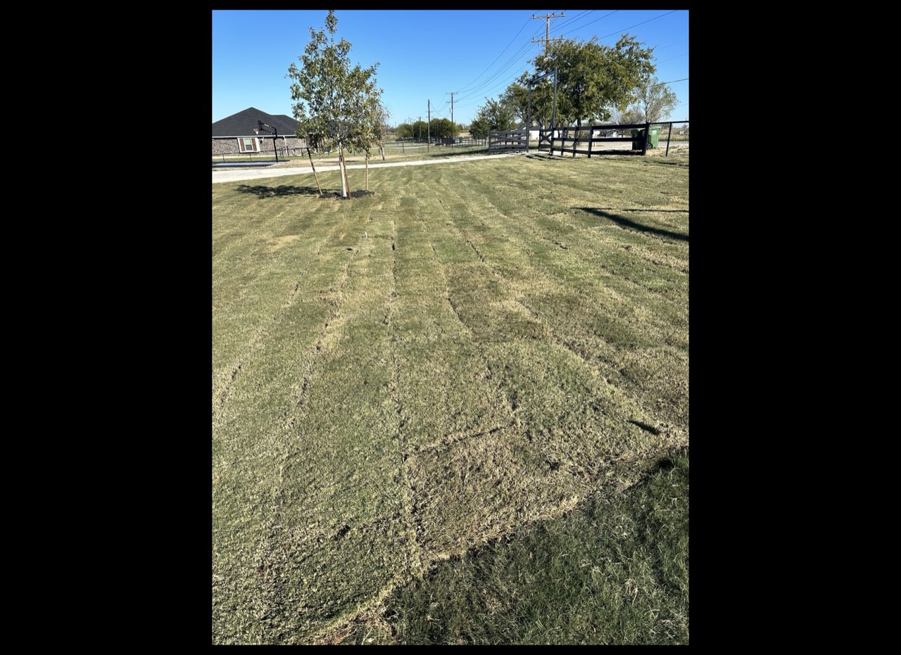
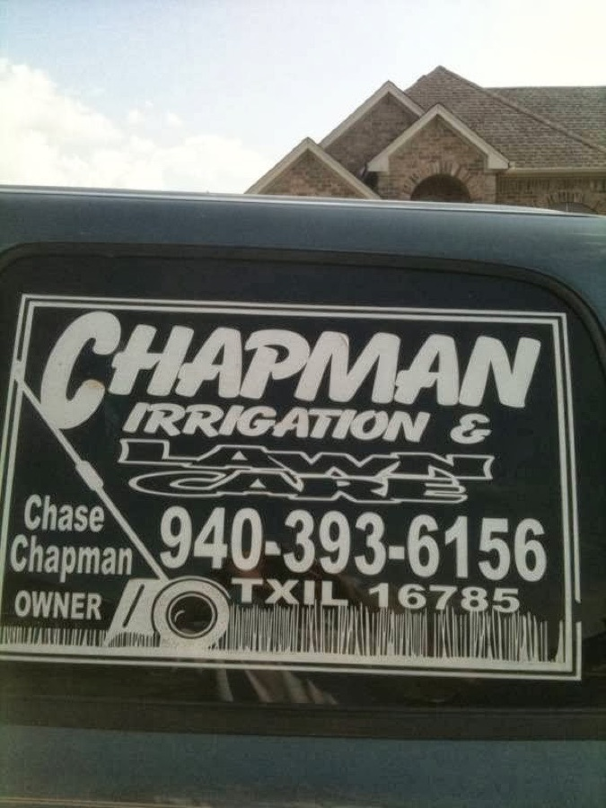

Sprinkler & irrigation systems
Full sprinkler design, installation and repair so your beds, lawn and foundation get the right amount of water all year — no dry corners, no waste.
- New system install
- Zone & head repair
- Controllers & valves
Chapman Irrigation & Lawncare designs and installs sprinkler systems, fixes drainage and grading, and keeps lawns green across Decatur and Wise County — owner-run by Chase Chapman since 1998.
From the first sprinkler zone to season-long mowing, Chapman handles the water side of your yard — install it right, drain it right, keep it green. Residential and commercial.
Full sprinkler design, installation and repair so your beds, lawn and foundation get the right amount of water all year — no dry corners, no waste.
Yard grading, French drains and drainage fixes that move standing water away from your home — the work neighbors hire us back to expand.
Mowing, edging, fertilization, leaf clean-up, sod and landscape work to keep the whole property sharp once the water is dialed in.

Wise County, TX — grading & sprinkler installA sprinkler system is only as good as its design. Chapman walks the property, plans the zones around your beds, grass and slope, and installs it clean — then makes sure drainage carries water away from the house instead of pooling against it.
Zones planned for beds, lawn and foundation — not a one-size template.
Grading and French drains stop the standing water that ruins lawns and foundations.
We leave the yard tidy — a point our customers call out by name.
No runaround. You talk to the people doing the work, and you know the plan before we dig.
Tell us about the yard, the problem, and what you want it to do.
We walk the property, plan the zones or drainage, and give you a free, clear quote.
Once you're booked, we get in quickly — customers note how fast we start.
Quality work, tested, and the job site left clean when we leave.
"These guys have been fantastic. We used them for sprinklers, grading our yard, they even helped us save a sidewalk that was causing issues with standing water… They do quality work and leave the job site clean. Highly recommend!"
"Chase and his employees have been nothing short of outstanding. He installed our irrigation 24 hrs prior to our closing and was hired immediately for additional work… they even helped us fix drainage that was causing standing water. Thanks again Chase!"
"We recently had the pleasure of working with Chase and his company at our home in Silver Lakes/Bowie. They were very professional and did a great job recommending the right solution for our home. Highly recommend Chapman Irrigation & Lawncare."
Grading, sprinkler installs and lawn work from Chapman job sites in Wise County.

Based on S Lipsey St in Decatur, Chapman covers Wise County and the surrounding communities for irrigation, drainage and lawn care.
No — estimates are free. We come out, look at the yard, talk through the right approach, and give you a clear quote before any work starts.
Yes. Chapman holds Texas Irrigator License TXIL #16785, so your sprinkler system is designed and installed to Texas standards.
Absolutely — it's some of our most-requested work. We grade yards and install French drains to move water away from your home and lawn, often alongside an irrigation job.
Both. We install complete new sprinkler systems and also repair zones, heads, valves and controllers on existing systems.
Both residential and commercial properties across Wise County. Give us a call and we'll let you know how soon we can get out.
It depends on the season and the size of the job, but our customers regularly mention how fast we get started after booking. Call (940) 393-6156 for current scheduling.
Call Chapman Irrigation & Lawncare and talk straight with Chase about your yard. Free estimates across Decatur and Wise County.
(940) 393-6156